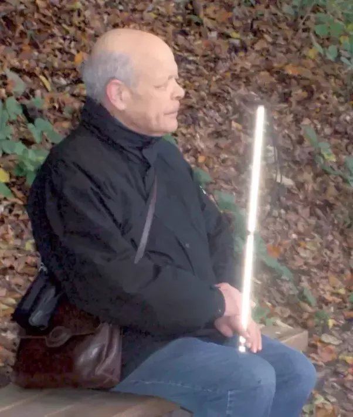

What is it like to be a blind mathematician?
My father had been blind most of his adult life. He was also a mathematician, of sorts: he held a Ph.D. in mathematics and though he wasn’t in academia, he spent much of his professional life around mathematics, especially Operations Research. He wrote papers, read books, programmed, and was an avid math problem solver his entire life.
His blindness came as a shock, though he was blind in one eye and had poor vision in the other from birth. I understood his struggle with this loss only much later; as a child (I was a child when it happened) it was just something that took place, and life moved on.
I suspect he was always good at doing mathematics mentally, but when he lost his eyesight he became phenomenally good at it. He would solve difficult integrals in his head for fun. He solved problems in commutative algebra, or topology, without the use of pen and paper. One night when he couldn’t fall asleep he calculated 2^{100}, and in the morning called me up to confirm those 31 digits. They were correct.
When I was in high school and needed help with solid geometry (3D Euclidean geometry), my friends and I would ask him to join us at the table. I would read the problem to him: ABCD is a regular tetrahedron with apex A. We drop an altitude from A to the base, and then bisect this angle, and then P is the midpoint of that, and we need to prove that UV equals GH.
Of course, he had to hold all of this mentally in his mind, but he wouldn’t hesitate: let X be the midpoint of PQ. Consider the triangles XAB and FGH. They are congruent because SAS. Therefore…
My friends would gawk. Later they got used to it, it became natural. It was also natural for him. He never said this to me, but this is a perspective I think he would agree with: as mathematicians, we are all blind. We can’t see seven-dimensional spaces, large cardinals, arithmetic lattices or cyclotomic fields. We do what we can with the brains we have, finding visual models and metaphors. As mathematical worlds go, my father was only slightly less seeing than the rest of us. It wasn’t much of a difference, and necessity and love let him bridge that gap almost completely. On more than one occasion, he stunned me with a visual insight such as this one.
Those of us with eyesight benefit from being able to write things down, manipulating equations or detailing an argument, and this saves a lot of memorization. He had to memorize, so he did, and when he had to, he wrote things down on his computer which let him look back at his work. He had a one-line Braille “display”, and later he used text-to-speech solutions as well. It’s not as convenient as jotting things down, but he didn’t need to jot down things most of us would, and when it was time to write things up those tools were sufficient, though far from perfect.
He did often need mathematical writings read to him, because no text-to-speech or Braille renderer could do anything with serious math formulas. When I was very young, I was often the one who did that. I didn’t understand a thing I was reading, but I learned to master the symbols (integrals, partial derivatives, gradients ,…), Greek letters, and the slight pauses that help clarify the structure of an expression (“One – over – x plus y”, as opposed to “One over x – plus – y”). I can’t judge how much of my own attraction to math is genetic and how much comes from the youthful joy of being his reader.
Later on he had assistants read materials to him, and one of them became an expert mathematical reader though she, too, had no understanding of what she was saying. I suspect Lev Pontryagin’s mother had a similar experience, reading mathematical papers to her brilliant blind son.
His blindness didn’t stop my father from doing most things, and it certainly didn’t stop him from learning and doing mathematics. I can’t judge if he would have been a stronger mathematician with his sight intact. I could argue both ways.
He passed away in 2013. I like this photo of him. The camera flash makes his white cane look like a light saber, which is strangely suitable.
